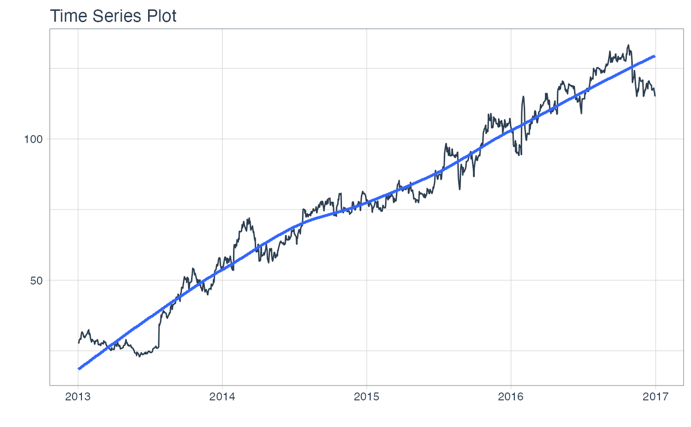
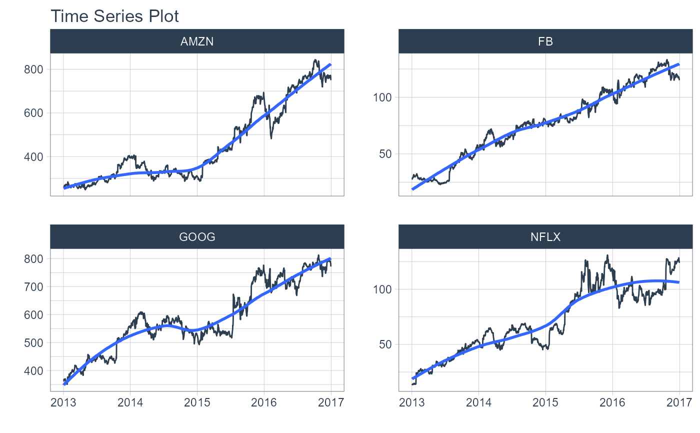
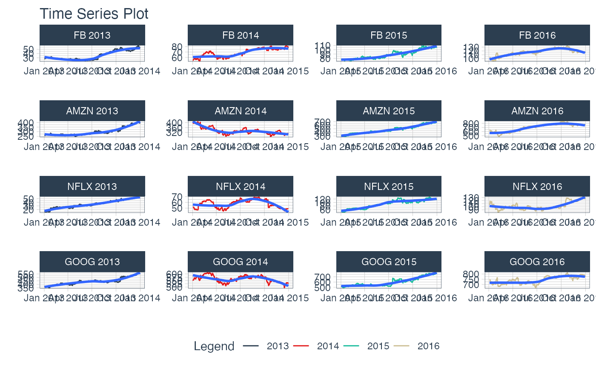
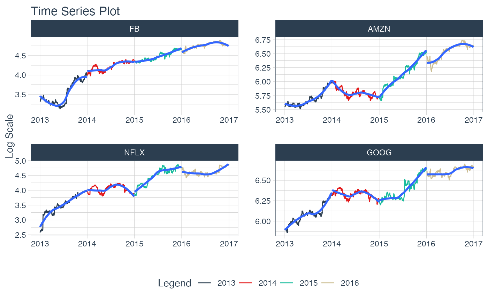
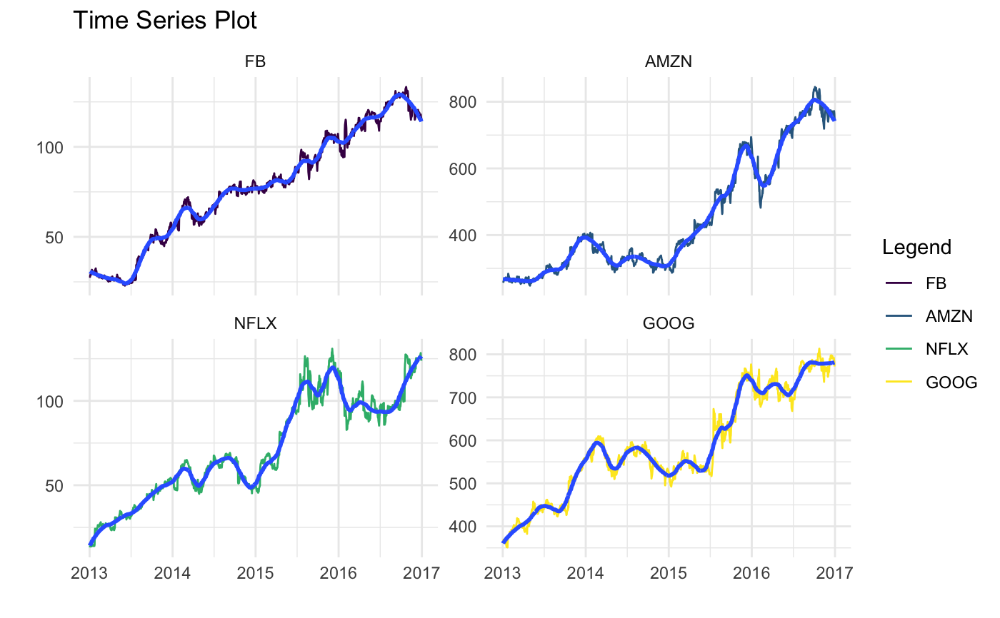

A workhorse time-series plotting function that generates interactive plotly plots,
consolidates 20+ lines of ggplot2 code, and scales well to many time series.
plot_time_series( .data, .date_var, .value, ..., .color_var = NULL, .facet_ncol = 1, .facet_scales = "free_y", .facet_collapse = TRUE, .facet_collapse_sep = " ", .line_color = "#2c3e50", .line_size = 0.5, .line_type = 1, .line_alpha = 1, .y_intercept = NULL, .y_intercept_color = "#2c3e50", .smooth = TRUE, .smooth_period = NULL, .smooth_span = 0.75, .smooth_degree = 2, .smooth_color = "#3366FF", .smooth_size = 1, .smooth_alpha = 1, .title = "Time Series Plot", .x_lab = "", .y_lab = "", .interactive = TRUE, .plotly_slider = FALSE )
| .data | A |
|---|---|
| .date_var | A column containing either date or date-time values |
| .value | A column containing numeric values |
| ... | One or more grouping columns that broken out into |
| .color_var | A categorical column that can be used to change the line color |
| .facet_ncol | Number of facet columns. |
| .facet_scales | Control facet x & y-axis ranges. Options include "fixed", "free", "free_y", "free_x" |
| .facet_collapse | Multiple facets included on one facet strip instead of multiple facet strips. |
| .facet_collapse_sep | The separator used for collapsing facets. |
| .line_color | Line color. Overrided if |
| .line_size | Line size. |
| .line_type | Line type. |
| .line_alpha | Line alpha (opacity). Range: (0, 1). |
| .y_intercept | Value for a y-intercept on the plot |
| .y_intercept_color | Color for the y-intercept |
| .smooth | Logical - Whether or not to include a trendline smoother.
Uses See |
| .smooth_period | Number of observations to include in the Loess Smoother.
You can use either period or span. See |
| .smooth_span | Percentage of observations to include in the Loess Smoother.
You can use either period or span. See |
| .smooth_degree | Flexibility of Loess Polynomial. Either 0, 1, 2 (0 = lest flexible, 2 = more flexible). |
| .smooth_color | Smoother line color |
| .smooth_size | Smoother line size |
| .smooth_alpha | Smoother alpha (opacity). Range: (0, 1). |
| .title | Title for the plot |
| .x_lab | X-axis label for the plot |
| .y_lab | Y-axis label for the plot |
| .interactive | Returns either a static ( |
| .plotly_slider | If TRUE, returns a plotly date range slider. |
A static ggplot2 plot or an interactive plotly plot
plot_time_series() is a scalable function that works with both ungrouped and grouped
data.frame objects (and tibbles!).
Interactive by Default
plot_time_series() is built for exploration using:
Interactive Plots: plotly (default) - Great for exploring!
Static Plots: ggplot2 (set .interactive = FALSE) - Great for PDF Reports
By default, an interactive plotly visualization is returned.
Scalable with Facets & Dplyr Groups
plot_time_series() returns multiple time series plots using ggplot2 facets:
group_by() - If groups are detected, multiple facets are returned
plot_time_series(.facets) - You can manually supply facets as well.
Can Transform Values just like ggplot
The .values argument accepts transformations just like ggplot2.
For example, if you want to take the log of sales you can use
a call like plot_time_series(date, log(sales)) and the log transformation
will be applied.
library(tidyverse) library(tidyquant) library(lubridate) library(timetk) # Works with individual time series FANG %>% filter(symbol == "FB") %>% plot_time_series(date, adjusted, .interactive = FALSE)# Works with groups FANG %>% group_by(symbol) %>% plot_time_series(date, adjusted, .facet_ncol = 2, # 2-column layout .interactive = FALSE)# Can also group inside FANG %>% mutate(year = year(date)) %>% plot_time_series(date, adjusted, symbol, year, # add groups .color_var = year, # color by year .facet_ncol = 4, .facet_scales = "free", .interactive = FALSE)#># Can apply .value mutations FANG %>% plot_time_series(date, log(adjusted), symbol, .facet_ncol = 4, .facet_scales = "free", .interactive = FALSE)# Plotly - Interactive Visualization By Default (Great for Exploration) FANG %>% plot_time_series(date, adjusted, symbol, .smooth_alpha = 0.5, .plotly_slider = TRUE) # ggplot2 - static visualization (Great for PDF Reports) FANG %>% plot_time_series( date, adjusted, symbol, .color_var = symbol, .facet_ncol = 2, .smooth_period = 180, .interactive = FALSE) + theme_tq_dark() + scale_color_viridis_d()#> #>